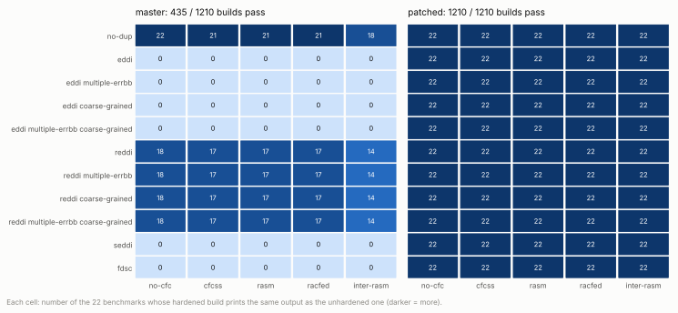
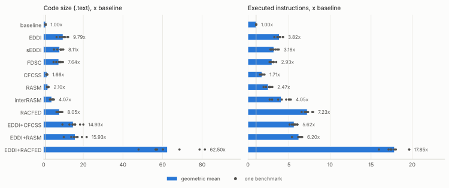
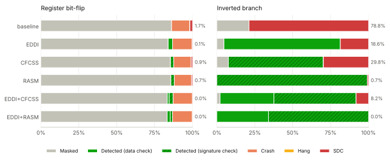
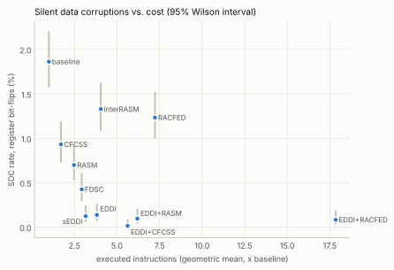

Benchmarks, compiler fixes and fault-injection evaluation
Formal Languages and Compilers, A.Y. 2026/27, Politecnico di Milano
Supervisors: Davide Baroffio, Emilio Corigliano
ASPIS is an out-of-tree LLVM plugin that hardens programs against radiation-induced soft errors by duplicating the computation (EDDI and its variants) and by checking the control flow with signatures (CFCSS, RASM, inter-RASM, RACFED). The goals of the project were (1) to protect C applications with ASPIS, (2) to verify the protection with fault injection and (3) to integrate the applications into the ASPIS main branch for regression testing. This report describes what was done for each goal:
The campaign shows that EDDI reduces the silent data corruptions caused by register bit-flips by a factor of 13.6 (from 1.86% to 0.14% of the faults) at 3.8 times the executed instructions, and that EDDI with CFCSS leaves one SDC in 7300 register faults. Data duplication cannot see a branch taken the wrong way, while the signature-based RASM, inter-RASM and RACFED detect 99.4% of the inverted branches. The campaign also revealed one more defect: RASM and RACFED did not check the blocks created by EDDI, so EDDI combined with them was less effective against control-flow faults than RASM or RACFED alone (12% of SDCs for inverted branches instead of 0.6%). With the fix these combinations leave no SDC for inverted branches.
All the code, the raw results and the scripts that produce every table and figure of this report are in the repository (ASPIS-Project/, see Appendix A). The use of a large language model in the project is declared in Section 9.
A particle strike can flip a bit in a register, in a pipeline latch or in a memory cell: the fault is transient, the hardware is not damaged, but the program may compute a wrong result without noticing it (a silent data corruption, SDC), crash, or hang. Software-Implemented Hardware Fault Tolerance (SIHFT) protects programs running on unprotected hardware by transforming the code: data-flow techniques duplicate the computation and compare the copies at selected points, control-flow checking (CFC) techniques assign a signature to each basic block and verify at run time that the blocks are executed in an order allowed by the control-flow graph.
ASPIS (Automatic Software-based Protection and Integrity Suite, Baroffio et al., ACM TODAES 2024, doi:10.1145/3660524) implements these transformations as LLVM passes on the IR. The aspis.sh driver compiles all the sources to IR at -O0, links them, and runs:
FuncRetToRef: every function returning a value gets a _ret version that writes the result through an extra pointer parameter, so that the two copies of the program can receive two copies of the result;EDDI.cpp) with different compile-time switches:
to_harden (and what they need);--multiple-errbb uses a separate error block for each check, and --coarse-grained (REPAIR) groups the duplicated instructions after the original ones to increase their distance in time;DuplicateGlobals, which keeps the duplicated globals consistent when they are written by functions that were not hardened.Every function f that is hardened gets a version f_dup that takes each parameter twice and executes both copies of the computation; global variables get a _dup copy. When a check fails, the program calls DataCorruption_Handler (data checks) or SigMismatch_Handler (signature checks), which the application must define. Since LLVM pointers became opaque, the data passes rely on the Type Deduction Analysis (TDA) library to know the type pointed by a pointer, because the checks on pointers compare the pointed values: the two copies of a pointer to a duplicated object legitimately differ.
Annotations (__attribute__((annotate("...")))) refine the protection: exclude leaves a function or global unprotected, to_duplicate duplicates the calls to a function instead of its body, to_harden selects what REDDI protects.
As an example, this is how EDDI (with the fixes of Section 4) transforms int scale(int v) { return v * g; }, where g is a global. The function returns its result through a pointer (FuncRetToRef), every parameter comes twice (%0/%2 are the two copies of v, %1/%3 of the return pointer), every load, multiplication and store is executed twice on the two copies of the data, and the two results are compared before they leave the function:
define void @scale_ret_dup(i32 %0, ptr %1, i32 %2, ptr %3) {
%4 = alloca i32 ; v
%5 = alloca i32 ; its duplicate
call void @llvm.memcpy(ptr %5, ptr %4, i64 4, i1 false)
store i32 %2, ptr %4
store i32 %0, ptr %5
%6 = load i32, ptr %4
%7 = load i32, ptr %5
%8 = load i32, ptr @g
%9 = load i32, ptr @g_dup
%10 = mul nsw i32 %6, %8
%11 = mul nsw i32 %7, %9
%12 = icmp eq i32 %10, %11 ; consistency check
br i1 %12, label %13, label %ErrBB
13:
store volatile i32 %10, ptr %3 ; "return" both copies
store volatile i32 %11, ptr %1
ret void
ErrBB:
call void @DataCorruption_Handler()
unreachable
}The proposal leaves the choice of the code to harden open. Instead of taking large existing programs, we wrote small programs designed for two purposes at once: being representative of the code that runs on the embedded systems targeted by SIHFT, and stressing the parts of C that a duplicating compiler can get wrong. All of them follow the same rules:
SUCCESS or FAIL (exit status 0 or 1), so a corrupted result is visible both in the output and in the exit status;FAULT_DETECTED: DataCorruption or FAULT_DETECTED: SigMismatch on stderr and exit with status 2 or 3, so detections are easy to classify;clang++) and give identical outputs in both languages;| Benchmark | What it does | Lines | Instructions | Features of C exercised |
|---|---|---|---|---|
aes128 |
AES-128 (FIPS-197) known-answer test, CBC encryption and decryption of 64 bytes; S-boxes computed at start-up in GF(2^8) | 315 | 645,680 | byte arithmetic, table look-ups in global arrays written at run time |
bst_dict |
word-frequency dictionary on a binary search tree: insert, lookup, in-order visit, deletion (leaf, one and two children), destruction checking for leaks | 238 | 56,117 | heap objects, pointers to pointers, recursion, string functions of libc |
expr_vm |
a miniature compiler: lexer, recursive-descent parser, constant folder, bytecode generator and stack VM; each expression is evaluated three ways and the results must agree | 615 | 79,421 | mutual recursion, many switches, array-based AST, snprintf into a hardened buffer |
fft |
iterative radix-2 FFT of 256 points: dominant bins, Parseval’s theorem, inverse transform | 176 | 367,763 | double-precision arithmetic, arrays of structs, calls to libm |
huffman |
Huffman compression and decompression round trip with a binary min-heap | 215 | 170,978 | index-based trees, data-dependent loops, bit-level I/O on a global buffer |
lu_solve |
LU decomposition with partial pivoting of a 12x12 matrix: solution of a system, determinant, inverse and check of A·A⁻¹ | 190 | 126,780 | 2-D global arrays of doubles, row pointers, pivot search |
pid_control |
closed-loop speed control of a DC motor with a PID (anti-windup, filtered derivative, quantised encoder), 2000 steps | 152 | 477,393 | single-precision floats, controller state in a global struct |
sobel |
Gaussian smoothing and Sobel edge detection on a synthetic 48x48 image, with histogram and checksums | 166 | 4,735,264 | 2-D arrays of bytes, clamping, small helpers in tight loops |
Lines: lines of the source file. Instructions: x86-64 instructions executed in the program’s own code (excluding libc and the loader) by the unhardened binary, measured by the profiler of Section 5.
| Benchmark | What it checks |
|---|---|
annotations |
to_harden, exclude and to_duplicate on functions and globals; the output must not depend on the technique |
callbacks_libc |
qsort and bsearch calling hardened comparators, a global table of function pointers, a function returning a function pointer |
ctor_tls |
constructors running before main, thread-local variables, an atexit handler |
dynamic_memory |
growable vector (realloc), linked list, 2-D array of row pointers, overlapping memmove on the heap |
float_special |
NaN, infinities, signed zeros, subnormals, long double: checks must not report a NaN as a corruption |
globals_pointers |
globals initialised with the address of other globals, pointers to pointers, static locals, struct globals reached through pointers |
int_arith_edge |
8 to 128-bit integers, wrap-around, shifts, division of negative numbers, overflow intrinsics, byte swaps |
lexer_dfa |
the same lexer written with goto and as a table-driven DFA: irreducible-looking control flow, many small blocks |
recursion |
deep, mutual and multi-way recursion (Ackermann, Hanoi), flood fill, backtracking (N-Queens, permutations) |
setjmp_longjmp |
a recursive evaluator that aborts with longjmp on errors |
struct_by_value |
small and large structs passed and returned by value (registers, byval, sret), calls through a pointer to a struct-returning function |
unions_bitfields |
type punning through unions, bit-field read-modify-write with wrap-around, tagged unions |
varargs |
va_arg with ints, doubles and pointers, va_copy, a va_list forwarded to vsnprintf |
vla_alloca |
one- and two-dimensional variable-length arrays in loops, alloca |
The official harness (testing/test.py) compiles each test with each of the 11 data protection options (--no-dup, the four EDDI variants, the four REDDI variants, --seddi, --fdsc) combined with each of the 5 control-flow options (--no-cfc, --cfcss, --rasm, --racfed, --inter-rasm) and compares the standard output of the hardened program with the one of the program compiled by clang++; a non-zero exit status is a failure. Using it on the new benchmarks we hit two problems of the harness itself:
opt loops forever the test fails after 60 s, but the opt process (child of a shell) keeps running and accumulates with the next ones;EDDI writes the list of the functions it compiled (compiled_eddi_functions.csv) in the current directory and DuplicateGlobals reads it back, so two builds running at the same time in the same directory read each other’s list.We therefore wrote two tools (in ASPIS-Project/scripts/): run_aspis_harness.py runs the official harness with one pytest process per test, each in a private directory, and kills the whole process group at the end; aspis_matrix.py builds the same 11x5 matrix with a hard time limit on every compilation and run, each build in its own directory, and classifies every failure (compiler error, compiler hang, crash, false detection, wrong output or exit status, hang of the program). All the measurements use LLVM 21.1.8, the version required by ASPIS, on x86-64 Linux.
On the main branch of ASPIS only 435 of the 1210 builds (36%) produce the output of the unhardened program. The failures are not spread uniformly: no benchmark works with the techniques that duplicate the whole program. EDDI (in its four variants), sEDDI and FDSC fail on all the 660 builds. REDDI passes 332 of 440, but without annotations it hardens almost nothing (only annotations has to_harden functions, and it fails), and the control-flow techniques alone (--no-dup) pass 103 of 110. The most frequent failure is a crash at run time (405 builds). Of the 14 benchmarks that crash with EDDI, 13 crash on a write into the read-only data segment of the program, at the first call to a library function that receives a pointer to a constant (defect 4 of the next section); the other one, callbacks_libc, on a null pointer when qsort calls the duplicated comparator (defect 5). Then come 165 broken modules or crashes of opt, 105 detections of faults that were never injected, and 100 builds in which opt never terminates (every combination that duplicates data on bst_dict and dynamic_memory, the two benchmarks with recursive structs). With the fixes of Section 4 all the 1210 builds pass.

| outcome | master | patched |
|---|---|---|
| compile-error | 165 | 0 |
| compile-hang | 100 | 0 |
| crash | 405 | 0 |
| false-detect | 105 | 0 |
| pass | 435 | 1210 |
On the existing ASPIS test suite (48 tests, 2640 builds of which 187 blacklisted) the patched version passes exactly the same 2453 builds as the main branch, so the fixes introduce no regression. Moreover, 23 of the blacklisted combinations pass after the fixes, in particular every data technique combined with inter-RASM on cpp_class, cpp_heap and cpp_template, which are removed from the blacklist by the last commit of the series. With the test configuration of the complete series (the 48 tests, our 22, and the reduced blacklist: 3850 builds, 154 blacklisted) all the 3696 remaining builds pass.
The failures of Section 3 come from the first 22 defects listed below; the 23rd does not make any build fail and was found by the fault-injection campaign (Section 6.2). For each one we found the root cause in the passes and wrote a fix; for 14 of them we also isolated a minimal reproducer (aspis-integration/reproducers/, a few lines of C each). Three defects (marked latent) were found while reading the code around the others and do not affect our benchmarks. The fixes are organised as a series of commits on top of the main branch (aspis-integration/patches/): every commit compiles on its own, has a message that explains the problem, and the series ends in the version used for all the experiments of this report.
| # | Defect | Effect on master | Commit | Reproducer |
|---|---|---|---|---|
| 1 | TDA unrolls recursive types forever | compiler hangs | 1 | r02 |
| 2 | checks dereference null pointers | crash | 2 | r03 |
| 3 | comparison chosen from the source type (struct passed as i64) |
compiler crash | 2 | struct_by_value |
| 4 | re-synchronisation after calls: 8-byte copy, also into read-only memory | crash, overflow | 3 | r01 |
| 5 | callbacks replaced by their _dup version |
crash | 4 | r04 |
| 6 | initializers of duplicated globals point to the originals | false detection | 5 | r05 |
| 7 | nested constant GEPs not remapped to the duplicates | false detection | 6 | r06 |
| 8 | duplicated memmove on non-duplicated memory |
wrong output | 7 | r07 |
| 9 | return pointer after the variadic arguments (FuncRetToRef) | broken module | 8 | r08 |
| 10 | variadic arguments duplicated in direct calls | wrong arguments, false detection | 9 | varargs |
| 11 | byval only on one copy of the parameters |
crash | 9 | r09 |
| 12 | clone of a VLA placed before its size | broken module | 10 | r10 |
| 13 | initialization check walks the block under construction | false detection | 11 | expr_vm |
| 14 | temporary duplicate of an argument reused by another call | broken module | 12 | r13 |
| 15 | temporary duplicates allocated at the call site (stack growth in loops) | latent | 12 | |
| 16 | size of the memcpy of temporary duplicates truncated to 8 bits |
latent | 12 | |
| 17 | temporary copy of a constant global outlives its stack frame | latent | 12 | |
| 18 | REDDI does not harden the _ret version of to_harden functions |
protection lost | 13 | r12 |
| 19 | locals duplicated on demand are never written | false detection | 13 | r12 |
| 20 | bit-field updates read uninitialized bits of both copies | false detection | 14 | unions_bitfields |
| 21 | setjmp/longjmp leave stale signatures |
false detection | 15 | r11 |
| 22 | inter-RASM: functions entered from non-hardened code | false detection | 16 | r14 |
| 23 | RASM and RACFED do not check the verification blocks of EDDI | undetected control-flow errors | 17 | fault injection |
| reproducer | options | master | patched |
|---|---|---|---|
r01_string_param.c |
--eddi --no-cfc |
crash (SIGSEGV) | ok |
r02_linked_list.c |
--eddi --no-cfc |
compiler hangs | ok |
r03_null_argument.c |
--eddi --no-cfc |
crash (SIGSEGV) | ok |
r04_qsort_callback.c |
--eddi --no-cfc |
crash (SIGSEGV) | ok |
r05_global_pointer_init.c |
--eddi --no-cfc |
false DataCorruption | ok |
r06_matrix_constant_index.c |
--eddi --no-cfc |
false DataCorruption | ok |
r07_memmove_heap.c |
--eddi --no-cfc |
wrong output | ok |
r08_variadic.c |
--eddi --no-cfc |
broken module (call signature) | ok |
r09_struct_by_value.c |
--eddi --no-cfc |
crash (SIGSEGV) | ok |
r10_vla.c |
--eddi --no-cfc |
broken module (dominance) | ok |
r11_setjmp.c |
--no-dup --cfcss |
false SigMismatch | ok |
r12_reddi_return.c |
--reddi --no-cfc |
false DataCorruption | ok |
r13_two_calls.c |
--eddi --no-cfc |
broken module (dominance) | ok |
r14_inter_rasm_callback.c |
--no-dup --inter-rasm |
false SigMismatch | ok |
Symptom. opt never terminates on any program with a recursive struct, such as the nodes of a linked list or of a tree (bst_dict, dynamic_memory, reproducer r02).
Cause. TDA represents types as trees, so a recursive type is unrolled. The analysis iterates until no deduced type changes, but each iteration can unroll struct node { ...; struct node *next; } one more level (the type of the value loaded from next is merged back into the struct), and with two pointer fields the size of the type doubles at every level: the fixed point is never reached.
Fix (in TypeDeductionAnalysis). After every merge, a pointer to a struct that already appears on the path from the root of the type is made opaque, and the nesting depth is bounded for unnamed types. The set of possible types becomes finite, so the iteration terminates. For EDDI the effect is that the pointed value of n->next is not compared, as for any opaque pointer.
Null pointers (r03). A check on a pointer compares the values it points to. When the pointer is null (the end of a list, realloc(NULL, n), free(NULL)), the check itself dereferences it and the program crashes. The loads of a check now go through select(p == null, guard, p), where guard is a zero-initialised constant: if both copies are null the check passes, if only one is null the loaded values differ and the fault is detected.
Type of the comparison. compareValues chose how to compare two values from their deduced source-level type, but the ABI may have lowered it: a struct of two ints is passed as an i64, and extractvalue on an integer crashed opt (struct_by_value). Moreover, the comparison of aggregates emitted an extractvalue per element and then compared nothing, because the extracted elements had no deduced type. Now the comparison follows the LLVM type (integers with icmp eq, floating point with fcmp ueq, pointers by their pointed scalar value) and aggregates are explicitly not compared, since their padding and uninitialized fields legitimately differ between the copies.
Initialization check (commit 11). Before comparing the pointed value of an alloca, EDDI checks that the variable is written on every path that reaches the check. The search walked the CFG while the verification block was being built: that block has no terminator yet, the walk stopped there and concluded that the variable was initialized. In expr_vm this made EDDI compare the return slot of a call before the call, a false detection that appeared or not depending on the order in which instructions are visited. A block without terminator now counts as a path that reaches the check.
Bit-fields (commit 14). h.version = 5 on a bit-field is compiled into load, mask, or, store of the whole word. The first assignment reads uninitialized bits, which differ between the variable and its copy, so the check on the store reports a corruption (unions_bitfields, depending on the stack contents). At the entry of every hardened function the content of each local variable is now copied into its duplicate.
Re-synchronisation after a call (r01). After calling a function that has no _dup version (e.g. printf), EDDI copied the pointed value of every pointer argument from the original to the duplicate, in case the callee wrote it. The copy loaded and stored a ptr, i.e. 8 bytes whatever the pointed type: with a pointer to a string literal received as a parameter (the two copies point to the same constant) it wrote into read-only memory and the program crashed; with a 4-byte int it overflowed the duplicate; with a buffer it synchronised only its first 8 bytes. The five-line reproducer is show("hello") calling printf("%s", label). Now arguments the callee cannot write through are skipped; distinct allocas and globals are synchronised entirely with a memcpy; any other pointer is synchronised for the size of its deduced type, and only when the two copies of the pointer differ at run time (otherwise the copy goes to a scratch buffer).
Callbacks (r04). A function passed as an argument was replaced with its _dup version, whose signature has every parameter twice: qsort then called it with the original arguments and the program crashed. The original function is now passed when the callee has no _dup version.
memmove on shared memory (r07). Intrinsics are always duplicated. A heap buffer is not duplicated (malloc is called once), so the two copies of an overlapping memmove on it shift the data twice. The duplicated memmove now moves the destination onto itself when the two destinations are equal.
Initializers of the duplicated globals (r05). int *p = &x; was duplicated as p_dup = &x instead of &x_dup: both copies of the program updated x through the pointers, x_dup stayed behind and the next check reported a corruption. The initializers of the duplicates are now remapped to the duplicated globals.
Nested constant expressions (r06). For m[2][3] = 7 on a global two-dimensional array clang 21 emits a nested constant GEP, gep(gep(@m, 0, 2), 0, 3); only one level was remapped, so the duplicated store wrote m instead of m_dup. Every constant expression operand is now rebuilt on top of the duplicated globals (lexer_dfa).
Variadic functions (r08). FuncRetToRef appended the return pointer after the variadic arguments, while it is the last fixed parameter of the _ret function (broken module). In EDDI, after duplicateOperands replaces the callee of a direct call with its _dup version, getCalledFunction() returns null, so the call was treated as indirect and the variadic arguments were duplicated too; the number of fixed arguments is now taken from the type of the call.
By-value parameters (r09). The _dup function got the attributes of the original parameters only on one of the two copies, while the calls had them on both: with byval structs caller and callee disagreed on how the arguments are passed. The attributes (except sret) are now on both copies, in the calls and in the functions.
Variable-length arrays (r10). The clone of an alloca is moved before the first non-alloca instruction of its block, i.e. before the computation of its size when the size is dynamic. Allocas with a non-constant size are now cloned in place.
Temporary duplicates (r13). When a call in a function that is not hardened needs a duplicate of a pointer argument, EDDI copies the pointed value into a temporary. The temporary was allocated at the call site and recorded in the map of the duplicates, so a second call in another block reused it without being dominated by it (broken module), or used a stale snapshot. The temporaries are now allocated in the entry block (no stack growth in loops) and forgotten after the call; the size of their memcpy was an i8 (sizes above 255 bytes were truncated) and is now an i64. The temporary copy of a constant global that EDDI made for stores is removed: it lived in the stack frame of the current function, so a pointer to it stored in a global or returned dangled.
With REDDI only the to_harden functions are hardened. FuncRetToRef replaces the calls to a function returning a value with calls to its _ret version, which is not annotated: the hardened copy was never called and the program ran unprotected, with only the code duplicated on demand around the hardened globals (r12). There, a local variable was cloned without duplicating the stores that write it, and the comparison of the never-written copy reported a corruption. The _ret version of an annotated function is now hardened, its calls are redirected, and the stores to a local variable duplicated on demand are duplicated too.
setjmp/longjmp (r11). When longjmp returns to a setjmp, the run-time signatures still have the values they had where longjmp was called, and the next check reports a mismatch (with every CFC technique). After a returns_twice call the signatures are now set back to the values expected at that point of the block: G and D for CFCSS, the runtime signature for RASM, the signature plus the updates of the previous instructions for RACFED, and for inter-RASM also the ret signature, saved before the call.
Functions entered from code that is not hardened (r14). Inter-RASM expects the caller to set the signatures of the callee before every call. A function called back by qsort, a constructor, an atexit handler, or main after the constructors were entered with the signatures of another function. Now main and the functions whose address is taken set the runtime signature to the one of their first block, and the signatures are saved and restored around indirect calls and calls to functions that are not compiled. This is what makes cpp_class, cpp_heap and cpp_template pass with inter-RASM.
Verification blocks of EDDI (commit 17). RASM and RACFED reset the runtime signature, without checking it, in every block whose name contains “verification”. The test was meant for the blocks the passes create themselves, but it also matches the VerificationBB blocks that EDDI creates for its checks, which with EDDI are the successor of most blocks: a wrong branch or jump into one of them re-synchronised the signature and went undetected. No program fails because of it, so the compatibility tests could not find it; the fault injection did (Section 6.2). Now only landing pads and the blocks created by the pass itself are exempted.
std::set of pointers; RACFED draws its signatures from std::random_device. The produced programs are correct, but a bug can appear in one compilation and not in the next (commit 11 was found this way), and fault-injection results are not reproducible bit by bit from the sources. A deterministic order and a seed would help.opt running, and the builds share compiled_eddi_functions.csv.We emulate single transient faults in the processor while the program runs its own code (never in libc or in the dynamic loader, which ASPIS does not harden). An experiment picks a dynamic instruction uniformly at random, i.e. a random instant of the execution, stops the program right before it and injects one fault:
reg: a bit-flip in one of the 16 general purpose registers (rax … r15, rsp included), random register and bit;branch: at a random conditional jump, the outcome of the jump is inverted (a fault in the flags or in the branch unit);jump: the program counter is set to the address of a random instruction of the program (an illegal control-flow transfer, the fault CFC is designed for).The register model does not cover the SSE registers, so faults in floating-point values (fft, lu_solve, pid_control) are represented only when they hit addresses, indices and integer values. Memory faults and multiple faults are out of scope.
fault_injection/injector/fi.c (about 700 lines of C) has three commands:
fi profile runs the program once under ptrace single-stepping, counts how many times each instruction of the executable runs and decodes the conditional jumps; it also saves the reference output (golden run);fi inject runs N experiments: it draws the target (instruction, occurrence) from the profile, starts the program with address-space randomisation disabled (so that addresses are the same in every run), stops it right before the chosen occurrence, modifies the registers, detaches and waits for the end with a timeout;fi bench measures the run time without tracing.Stopping at the k-th execution of an instruction is the expensive part: the simple way (an int3 at the address, and at every hit: restore, single-step, re-insert) costs two ptrace stops per hit, and the hot instructions of the benchmarks run tens of thousands of times. The injector programs instead a hardware execution breakpoint with perf_event_open (PERF_TYPE_BREAKPOINT, sample_period = k, sigtrap = 1): the hits are counted by the kernel without stopping the program, and only the k-th one sends a synchronous SIGTRAP, before the instruction executes. In the virtual machine used for the campaign this is 2.4 times faster than the software method (90 ms against 220 ms per experiment on aes128), with identical results for the same seed; the software method remains as a fallback.
Each experiment is classified, in this order, as: hang if the program did not end within 20 times its normal run time (at least 300 ms); crash if it was killed by a signal; detected (data) or detected (CFC) if the corresponding handler reported the fault (the handlers then exit); masked if its output and exit status are the ones of the golden run; SDC otherwise, which includes a wrong output and the program’s own self-check printing FAIL.
fault_injection/campaign.py builds each application with each configuration, profiles it, measures it and runs the injections in parallel (one process per core), caching every step so that it can be resumed. We used 11 configurations: the unprotected baseline (same pipeline, no transformation), the three data techniques that duplicate the whole program (EDDI, sEDDI, FDSC), the four CFC techniques alone (CFCSS, RASM, inter-RASM, RACFED), and EDDI combined with CFCSS, RASM and RACFED. REDDI is not included: it protects only annotated code, so its coverage depends on the annotations rather than on the technique. For each application, configuration and fault model we injected 1000 faults (300 for sobel, whose hot loops make each experiment about ten times slower than for the others), in chunks of 100 with seeds derived from the names (SHA-256), for a total of 240,900 experiments. Proportions are given with 95% Wilson score intervals.
Data protection is the expensive part. EDDI executes 3.8 times the instructions of the unprotected program (geometric mean over the applications, between 3.2x and 4.3x), sEDDI 3.2x and FDSC 2.9x: every instruction is executed twice and each check adds a comparison and a branch (3250 checks in the 8 applications with EDDI, 1955 with sEDDI, 1524 with FDSC). The code grows much more than the execution (9.8x for EDDI): every hardened function exists in four versions (original, _ret, _dup, _ret_dup), each check splits a block in three, and ASPIS compiles at -O0, where every value goes through the stack. The versions that are no longer called stay in the binary: running globaldce before the back-end removes about 15% of the code of aes128 and sobel with the same output.
The control-flow techniques cost less but differ a lot: CFCSS 1.7x, RASM 2.5x, inter-RASM 4.1x (it also splits the blocks at the calls and, with our fixes, saves and restores the signatures around calls to external functions) and RACFED 7.2x, since it updates the signature after every instruction. Combined with EDDI the costs roughly add up: 5.6x with CFCSS, 6.2x with RASM and 17.9x with RACFED, whose binaries are 62 times larger than the unprotected ones.
The fixes of Section 4 do not change these costs: on the six applications that the main branch can compile with EDDI (it crashes when they run), our version has the same number of checks and 1-3% more code (the null guards and the initialization of the duplicated locals). We do not report run times: the applications run for a few milliseconds, so the measurements are dominated by the start-up of the process and by the load of the machine; executed instructions are a precise and deterministic measure of the same cost.

| configuration | code size | executed instructions | consistency checks |
|---|---|---|---|
| baseline | 1.00x | 1.00x | 0 |
| EDDI | 9.79x | 3.82x | 3250 |
| sEDDI | 8.11x | 3.16x | 1955 |
| FDSC | 7.64x | 2.93x | 1524 |
| CFCSS | 1.66x | 1.71x | 0 |
| RASM | 2.10x | 2.47x | 0 |
| interRASM | 4.07x | 4.05x | 0 |
| RACFED | 8.05x | 7.23x | 0 |
| EDDI+CFCSS | 14.93x | 5.62x | 3253 |
| EDDI+RASM | 15.93x | 6.20x | 3252 |
| EDDI+RACFED | 62.50x | 17.85x | 3250 |
Register bit-flips are mostly harmless: in the unprotected programs 85.8% of them are masked (the register is dead or overwritten), 12.3% crash the program (a corrupted pointer, often the stack pointer) and 1.86% silently corrupt the output. Data duplication removes most of the SDCs: EDDI leaves 0.14% (13.6 times fewer), sEDDI 0.12% and FDSC 0.42%. The checks detect only about 3% of the faults directly, but these are the ones that matter: a corrupted value is caught before it reaches a store, a call or a branch. The control-flow techniques alone leave between 0.70% (RASM) and 1.33% (inter-RASM), since only the bit-flips that derail the control flow can be caught by a signature. Combining EDDI with CFCSS gives the best protection against register faults: one SDC in 7300 faults (0.01%).
Inverted branches are the most harmful faults for these applications: 79.4% of them corrupt the output, because the result depends on how many times the loops run and on which path the data-dependent branches take. EDDI detects 73.9% of them and leaves 20.8% of SDCs, but the detections are partly an artefact of the fault model: the branches of the program are not duplicated (the two copies of the condition agree and the jump is taken once), and 75% of the conditional jumps executed by an EDDI program are those of its own checks, whose inversion calls the handler. RASM, inter-RASM and RACFED detect 99.4-99.5% of the inverted branches, because the signature update at the end of a block is selected by the same condition as the branch: a jump that disagrees with its condition lands in a block with the wrong signature. CFCSS, whose signatures only encode which blocks may follow each other, cannot tell the right successor from the wrong one and leaves 29.6% of SDCs. The few SDCs left by RASM and RACFED are all in lu_solve and pid_control, at conditional jumps that are not branches of the IR: at -O0 the back-end implements a select between two floating-point values (e.g. x < 0 ? -x : x) with a jump, which no IR-level technique can see.
Wrong jump targets crash 75.5% of the unprotected runs and corrupt the output in 19.6%. The control-flow techniques detect most of them: RACFED, whose updates after every instruction also catch jumps into the middle of a block, leaves 0.15% of SDCs, RASM 1.22%, inter-RASM 1.41%, CFCSS 2.95%. EDDI alone detects half of them, as a jump into the duplicated code soon makes the two copies disagree, and leaves 4.6%. EDDI with CFCSS leaves 0.23%.
EDDI with RASM or RACFED. In the first run of the campaign these two combinations were worse than RASM or RACFED alone on control-flow faults: 12.4% and 12.1% of SDCs for inverted branches (against 0.6%), 5.3% and 3.2% for wrong jumps (against 1.2% and 0.15%). Looking at where the undetected faults were injected, all the inverted branches that produced an SDC had as wrong target one of the verification blocks created by EDDI, where RASM and RACFED reset the signature instead of checking it: defect 23 of Section 4, fixed by commit 17. The two configurations were then rebuilt and the injections repeated; the figure and the tables of this section use the results after the fix, compared with the first run in the table below. After the fix the two combinations leave no SDC among the 7300 inverted branches (12.4% and 12.1% before), and 1.70% and 0.10% of the wrong jumps (5.25% and 3.18% before). The two families now cover each other: the signatures catch the branches taken the wrong way, which EDDI cannot see, and the duplicated computation catches the wrong values chosen by the jumps of the floating-point selects, which the signatures cannot see. The price is a slightly higher cost, since the verification blocks are now checked: 6.2 and 17.9 times the executed instructions of the baseline (5.5 and 16.9 before).
| configuration | fault model | SDC before | SDC after | detected (CFC) before | detected (CFC) after |
|---|---|---|---|---|---|
| EDDI+RASM | Register bit-flip | 0.14% | 0.10% | 0.5% | 1.5% |
| EDDI+RASM | Inverted branch | 12.44% | 0.00% | 34.4% | 67.3% |
| EDDI+RASM | Wrong jump target | 5.25% | 1.70% | 12.8% | 45.8% |
| EDDI+RACFED | Register bit-flip | 0.12% | 0.08% | 1.8% | 4.0% |
| EDDI+RACFED | Inverted branch | 12.14% | 0.00% | 35.0% | 67.2% |
| EDDI+RACFED | Wrong jump target | 3.18% | 0.10% | 10.5% | 39.4% |

| configuration | n | masked | detected (data) | detected (CFC) | crash | hang | SDC | SDC 95% CI |
|---|---|---|---|---|---|---|---|---|
| baseline | 7300 | 85.8 | 0.0 | 0.0 | 12.3 | 0.0 | 1.86 | 1.58–2.20 |
| EDDI | 7300 | 82.6 | 3.1 | 0.0 | 14.2 | 0.0 | 0.14 | 0.07–0.25 |
| sEDDI | 7300 | 82.4 | 2.8 | 0.0 | 14.7 | 0.0 | 0.12 | 0.06–0.23 |
| FDSC | 7300 | 82.7 | 2.2 | 0.0 | 14.7 | 0.0 | 0.42 | 0.30–0.60 |
| CFCSS | 7300 | 84.8 | 0.0 | 2.2 | 12.0 | 0.0 | 0.93 | 0.74–1.18 |
| RASM | 7300 | 85.2 | 0.0 | 2.4 | 11.7 | 0.0 | 0.70 | 0.53–0.92 |
| interRASM | 7300 | 85.1 | 0.0 | 1.6 | 12.0 | 0.0 | 1.33 | 1.09–1.62 |
| RACFED | 7300 | 79.5 | 0.0 | 4.6 | 14.7 | 0.0 | 1.23 | 1.00–1.51 |
| EDDI+CFCSS | 7300 | 83.0 | 1.9 | 2.4 | 12.7 | 0.0 | 0.01 | 0.00–0.08 |
| EDDI+RASM | 7300 | 83.3 | 2.4 | 1.5 | 12.7 | 0.0 | 0.10 | 0.05–0.20 |
| EDDI+RACFED | 7300 | 77.0 | 2.5 | 4.0 | 16.4 | 0.0 | 0.08 | 0.04–0.18 |
| configuration | n | masked | detected (data) | detected (CFC) | crash | hang | SDC | SDC 95% CI |
|---|---|---|---|---|---|---|---|---|
| baseline | 7300 | 19.5 | 0.0 | 0.0 | 1.1 | 0.1 | 79.36 | 78.41–80.27 |
| EDDI | 7300 | 4.8 | 73.9 | 0.0 | 0.4 | 0.0 | 20.82 | 19.91–21.77 |
| sEDDI | 7300 | 7.9 | 59.6 | 0.0 | 0.5 | 0.0 | 31.93 | 30.87–33.01 |
| FDSC | 7300 | 8.7 | 56.1 | 0.0 | 0.7 | 0.0 | 34.59 | 33.51–35.69 |
| CFCSS | 7300 | 6.9 | 0.0 | 62.9 | 0.5 | 0.0 | 29.64 | 28.61–30.70 |
| RASM | 7300 | 0.0 | 0.0 | 99.4 | 0.0 | 0.0 | 0.62 | 0.46–0.82 |
| interRASM | 7300 | 0.0 | 0.0 | 99.5 | 0.0 | 0.0 | 0.49 | 0.36–0.68 |
| RACFED | 7300 | 0.0 | 0.0 | 99.4 | 0.0 | 0.0 | 0.58 | 0.43–0.78 |
| EDDI+CFCSS | 7300 | 2.4 | 33.8 | 54.1 | 0.3 | 0.0 | 9.37 | 8.72–10.06 |
| EDDI+RASM | 7300 | 0.0 | 32.7 | 67.3 | 0.0 | 0.0 | 0.00 | 0.00–0.05 |
| EDDI+RACFED | 7300 | 0.0 | 32.8 | 67.2 | 0.0 | 0.0 | 0.00 | 0.00–0.05 |
| configuration | n | masked | detected (data) | detected (CFC) | crash | hang | SDC | SDC 95% CI |
|---|---|---|---|---|---|---|---|---|
| baseline | 7300 | 2.6 | 0.0 | 0.0 | 75.5 | 2.3 | 19.62 | 18.72–20.54 |
| EDDI | 7300 | 1.6 | 50.9 | 0.0 | 42.9 | 0.0 | 4.60 | 4.15–5.11 |
| sEDDI | 7300 | 2.0 | 38.0 | 0.0 | 54.6 | 0.0 | 5.45 | 4.95–6.00 |
| FDSC | 7300 | 1.7 | 31.9 | 0.0 | 60.8 | 0.0 | 5.63 | 5.12–6.18 |
| CFCSS | 7300 | 0.8 | 0.0 | 67.1 | 29.1 | 0.0 | 2.95 | 2.58–3.36 |
| RASM | 7300 | 0.5 | 0.0 | 78.2 | 20.1 | 0.0 | 1.22 | 0.99–1.50 |
| interRASM | 7300 | 0.4 | 0.0 | 64.6 | 33.5 | 0.1 | 1.41 | 1.16–1.71 |
| RACFED | 7300 | 0.1 | 0.0 | 61.6 | 38.1 | 0.1 | 0.15 | 0.08–0.27 |
| EDDI+CFCSS | 7300 | 0.2 | 4.8 | 77.6 | 17.2 | 0.0 | 0.23 | 0.15–0.37 |
| EDDI+RASM | 7300 | 0.6 | 31.2 | 45.8 | 20.6 | 0.0 | 1.70 | 1.43–2.02 |
| EDDI+RACFED | 7300 | 0.0 | 24.8 | 39.4 | 35.7 | 0.0 | 0.10 | 0.05–0.20 |
| benchmark | baseline | EDDI | sEDDI | FDSC | CFCSS | RASM | interRASM | RACFED | EDDI+CFCSS | EDDI+RASM | EDDI+RACFED |
|---|---|---|---|---|---|---|---|---|---|---|---|
| aes128 | 2.2 | 0.2 | 0.0 | 1.7 | 0.8 | 0.5 | 1.0 | 1.6 | 0.0 | 0.0 | 0.0 |
| bst_dict | 1.1 | 0.1 | 0.1 | 0.3 | 0.1 | 0.1 | 0.4 | 0.5 | 0.0 | 0.3 | 0.3 |
| expr_vm | 2.9 | 0.0 | 0.1 | 0.0 | 1.8 | 1.2 | 1.3 | 1.3 | 0.1 | 0.0 | 0.0 |
| fft | 1.3 | 0.0 | 0.0 | 0.0 | 0.8 | 0.9 | 3.0 | 1.3 | 0.0 | 0.1 | 0.0 |
| huffman | 1.6 | 0.1 | 0.2 | 0.4 | 0.4 | 0.9 | 0.5 | 1.6 | 0.0 | 0.1 | 0.0 |
| lu_solve | 2.0 | 0.2 | 0.3 | 0.5 | 1.1 | 1.0 | 1.9 | 0.8 | 0.0 | 0.2 | 0.2 |
| pid_control | 1.8 | 0.1 | 0.2 | 0.1 | 1.5 | 0.3 | 0.9 | 1.1 | 0.0 | 0.0 | 0.1 |
| sobel | 2.3 | 1.0 | 0.0 | 0.3 | 1.0 | 0.7 | 2.3 | 2.7 | 0.0 | 0.0 | 0.0 |
The unprotected applications have similar SDC rates for register faults (between 1.1% for bst_dict and 2.9% for expr_vm). EDDI and sEDDI bring all of them to 0.3% or less, with one exception in sobel (3 SDCs out of 300 faults for EDDI; with 300 faults the intervals are wide). FDSC follows EDDI except on aes128 (1.7% against 0.2%): the rounds of AES are long straight-line sequences of table look-ups and stores, and FDSC checks only at a subset of the synchronisation points, so a corrupted byte can be stored and propagate without passing through a check. The control-flow techniques alone do not reduce register SDCs in a consistent way: inter-RASM on fft even shows more of them than the unprotected build (3.0% against 1.3%), an effect we did not investigate further. The per-application tables of the other fault models are in results/fault_injection/ (generated as report/tables/fi_sdc_branch.md and fi_sdc_jump.md).
The SDC rate per injected fault does not tell the whole story: a hardened program runs longer, so it is hit by proportionally more faults. If faults arrive uniformly in time, the probability that a run ends with an SDC is proportional to the SDC rate multiplied by the executed instructions, and its inverse, the mean work to failure (MWTF), measures the improvement in reliability for the same amount of work.
For register faults sEDDI has the best ratio among the single techniques (4.8x): it removes as many SDCs as EDDI (3.6x) with fewer checks, while FDSC gains only 1.5x. EDDI with CFCSS reaches 24x. The control-flow techniques alone barely help against register faults (1.1x for RASM, 1.2x for CFCSS), and inter-RASM and RACFED even lower the MWTF (0.3x and 0.2x): they cost more than they protect. For control-flow faults the ranking is reversed: RASM improves the MWTF by 52x for inverted branches and 6.5x for wrong jumps, inter-RASM by 40x and 3.4x, RACFED by 19x and 18x, CFCSS by only 1.6x and 3.9x, while the data techniques stay around 1x. With the fix, EDDI with RACFED removes 205 times the SDCs of wrong jumps (11.5x MWTF) and the combinations of EDDI with RASM or RACFED leave no SDC for inverted branches; EDDI with CFCSS remains the best compromise when all three fault models matter (24x, 1.5x and 15x).
| configuration | register bit-flip | inverted branch | wrong jump target |
|---|---|---|---|
| baseline | 1.0x / 1.0x | 1.0x / 1.0x | 1.0x / 1.0x |
| EDDI | 13.6x / 3.6x | 3.8x / 1.0x | 4.3x / 1.1x |
| sEDDI | 15.1x / 4.8x | 2.5x / 0.8x | 3.6x / 1.1x |
| FDSC | 4.4x / 1.5x | 2.3x / 0.8x | 3.5x / 1.2x |
| CFCSS | 2.0x / 1.2x | 2.7x / 1.6x | 6.7x / 3.9x |
| RASM | 2.7x / 1.1x | 128.7x / 52.0x | 16.1x / 6.5x |
| interRASM | 1.4x / 0.3x | 160.9x / 39.8x | 13.9x / 3.4x |
| RACFED | 1.5x / 0.2x | 137.9x / 19.1x | 130.2x / 18.0x |
| EDDI+CFCSS | 136.0x / 24.2x | 8.5x / 1.5x | 84.2x / 15.0x |
| EDDI+RASM | 19.4x / 3.1x | no SDC | 11.5x / 1.9x |
| EDDI+RACFED | 22.7x / 1.3x | no SDC | 204.6x / 11.5x |

ASPIS-Project/aspis-integration/ contains what is needed to merge the work into the main branch:
patches/aspis/: the 19 commits, produced with git format-patch against b66a090. Commits 1-17 are the fixes of Section 4 (one per problem, each compiling on its own, the reproducer named in the message); commit 18 adds the 22 benchmarks to testing/tests/c/applications/ and testing/tests/c/language_features/ and their entries to testing/config/tests.toml; commit 19 removes inter-RASM from the blacklist of cpp_class, cpp_heap and cpp_template;patches/tda/: the fix of TypeDeductionAnalysis, to be merged in its repository before the first ASPIS commit, which moves the submodule pointer;flc_tests.toml: the entries of the tests, in the format of the harness;reproducers/: the minimal programs and run.py, which builds them with several ASPIS checkouts (table of Section 4).With the series applied, pytest test.py in testing/ runs the 22 new tests with the 55 combinations together with the existing ones. On the CI this adds 1210 builds to the existing 2640; a build of one of our benchmarks takes 0.2 s on average (median 0.1 s, at most 1.1 s), so the new tests add a few minutes to a run.
c_function_pointer (with the techniques that do not duplicate the indirect call) and on the C++ tests with exceptions; the remaining blacklisted combinations are unchanged.char * parameter is synchronised partially (a false detection is possible, never a crash).select between floating-point values at -O0: these are the only inverted branches left undetected by RASM and RACFED (Section 6.2), and only data duplication catches them.sobel received 300 faults per configuration and fault model instead of 1000, so its per-application results have wider intervals.As allowed by the supervisors (“you can do whatever you want with AI, even the whole project, but you have to declare it”), this project was carried out with extensive use of an LLM-based coding agent, Claude (Anthropic), through Claude Code. The agent was used for:
The students defined the goals, supervised the work, and are responsible for checking the results and the content of this report.
The repository has the following layout:
| Path | Content |
|---|---|
benchmarks/applications/, benchmarks/features/ |
the 22 benchmarks |
aspis-integration/ |
patches, test entries, reproducers |
fault_injection/injector/fi.c |
the fault injector |
fault_injection/campaign.py, campaign.toml |
the campaign |
fault_injection/analyze.py |
tables and figures |
scripts/aspis_matrix.py, scripts/run_aspis_harness.py |
compatibility testing |
results/ |
raw and aggregated results of all the experiments |
report/ |
this report (report.md, built by build.py) |
Commands (paths to adapt; the scripts print their options with --help):
# 1. LLVM 21.1.8 and ASPIS with the patch series (see the README)
# 2. compatibility of the 22 benchmarks, on master and with the fixes
python3 scripts/aspis_matrix.py --aspis <ASPIS master> --llvm-bin <llvm>/bin \
--tests aspis-integration/flc_tests.toml \
--tests-root benchmarks-as-in-aspis --out matrix-master
python3 scripts/aspis_matrix.py --aspis <ASPIS + fixes> --llvm-bin <llvm>/bin \
--tests aspis-integration/flc_tests.toml --out matrix-patched
# 3. reproducers
python3 aspis-integration/reproducers/run.py --llvm-bin <llvm>/bin \
--aspis master=<ASPIS master> --aspis patched=<ASPIS + fixes>
# 4. fault injection (paths at the top of campaign.toml)
gcc -O2 -o fi fault_injection/injector/fi.c
python3 fault_injection/campaign.py fault_injection/campaign.toml --jobs $(nproc)
# 5. tables, figures and this report
python3 fault_injection/analyze.py --campaign <campaign output> --out report \
--matrix master=matrix-master --matrix patched=matrix-patched
python3 report/build.py--tests-root points to a directory with the layout of testing/tests/ (c/applications/, c/language_features/), e.g. the testing/tests of an ASPIS checkout with commit 18 applied. The campaign of Section 5 takes about 2.5 hours on a 4-core virtual machine, most of it for sobel (the profile of its EDDI+RACFED build alone, 79 million single steps, takes 40 minutes); it can be interrupted and resumed, and injections in campaign.toml can be lowered for a quicker run.
b66a090).